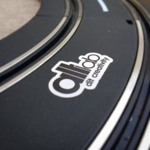

Era uma vez uma garra e a sua irmã, que passavam os dias abandonadas na casa de banho do FabLab em Lisboa.
Um dia os cavaleiro do reino do altLab resgataram uma das irmãs e aceitaram-na na sua família, arranjaram-na e aprenderam sobre ela, construíram-lhe novos interfaces e, com o apoio da Lindo Serviço, vestiram-na, com os melhores trajes do reino, para a levar à Maker Faire 2016.
A Princesa Garra Makey foi adorada por crianças dos 8 aos 80, que se deliciaram com os doces e presentes que ela tinha para dar
Tal foi o burburinho que os organizadores da Festa, decidiram reconhecer por duas vezes o mérito da Princesa com duas belas fitas azuis e douradas.
Mas a Princesa não ia só, levava como convidados o Mestre Gustavo com o seu chocolate artesanal; O Cavaleiro João Alves com o altLapse: Os altLabbers João Silva e Fernando Carvalho com projecto “Ezequiel” — sonar para os invisuais que identifica os obstáculos por meio de vibração; Logo ali ao lado pela mão do Luis Dinis e com a ajuda do Fernando Carvalho, rugiam furiosamente os motores, numa pista que era alimentada pela energia de quem pedalava, pista essa, que também ela recebeu a sua merecida fita de mérito.

De todo o reconhecimento que a equipa poderia ter tido, para além das fitas de mérito de projecto e da fita de mérito como Hackerspace, o melhor e inesperado estava guardado para o fim e veio de uma Abelha…
Das mãos do Mestre Francisco Mendes, veio o maior reconhecimento que poderíamos receber como colectivo, uma perfeita Prusa Bee que orgulhosamente tomará o lugar da nossa adorada BQ.
E assim acaba uma história que promete começar muitas outras…
AGRADECIMENTOS
Em nome de todo o altLab quero expressar em Primeiro lugar o nosso agradecimento ao Luís Coelho, que disponibilizou ao altLab e à sua equipa, sem reservas e de braços abertos o acesso ás instalações da Lindo Serviço o que permitiu ao altLab vestir a Princesa do Povo. Luís Coelho, que segundo a equipa que trabalhou na Garra Makey merece a fita de mérito de Melhor Patrão do Mundo, 🙂 é também um dos poucos homens em portugal que se pode orgulhar de ser responsavel por fazer caír OVNIS em frente ao Vasco da Gama e encolher automóveis.
Quero agradecer à equipa do altLab que tornou o projecto Possível, em particular ao João Silva AKA Guarda João, que preserverantemente partilhou varias noitadas a queimar dedos e neurónios para ajudar a desconstruir a lógica de controle da Garra;
Ao Pedro Angêlo por ter sido estruturante na preparação do código, a partir dos fracos ensaios pueris que lhe disponibilizei como vectores de construção e pela abertura do repositório da garra assim como o constante apoio e resposta aos desafios que lhe fomos colocando.
Ao Afonso Muralha que desenvolveu o controle via nunchuck da wii e que à rebelia dos pais permaneceu dedicadamente connosco no dia anterior à feira a finalizar as decorações e testar os controles da garra (agradecimento especial aos pais por terem permitido 🙂
Ao João Alves que em deterimento do seu projeto pessoal e do seu tempo de família se lançou ao desafio com um controlador via capacete das obras (Projecto que infelizmente foi mais teimoso que nós e não quis funcionar durante a feira) e que permaneceu com a equipa da Garra pela madrugada a fora a ultimar os perparativos.
Ao Mestre Casquinha da Lindo Serviço, marceneiro por paixão e Maker de cerveja, iguarias e engenhocas, por nos ter emprestado a sua carrinha, sem a qual não teriamos conseguido transportar a Garra.
Ao Mestre Guilherme da Artica por ter disponíbilizado o transporte para a nossa Garra no caminho de volta a casa.
Ao Mestre Gustavo ter aceite o desafio de partilhar connosco o segredo do seu chocolate.
A toda a equipa do altLab, da MakerFaire, do FabLabLisboa e todos os que de algum modo influenciam ou contribuem para o conhecimento livre…
A todos um bem haja e até breve.
Vinicius Silva — altLabHost

{kind=link}
{kind=link}